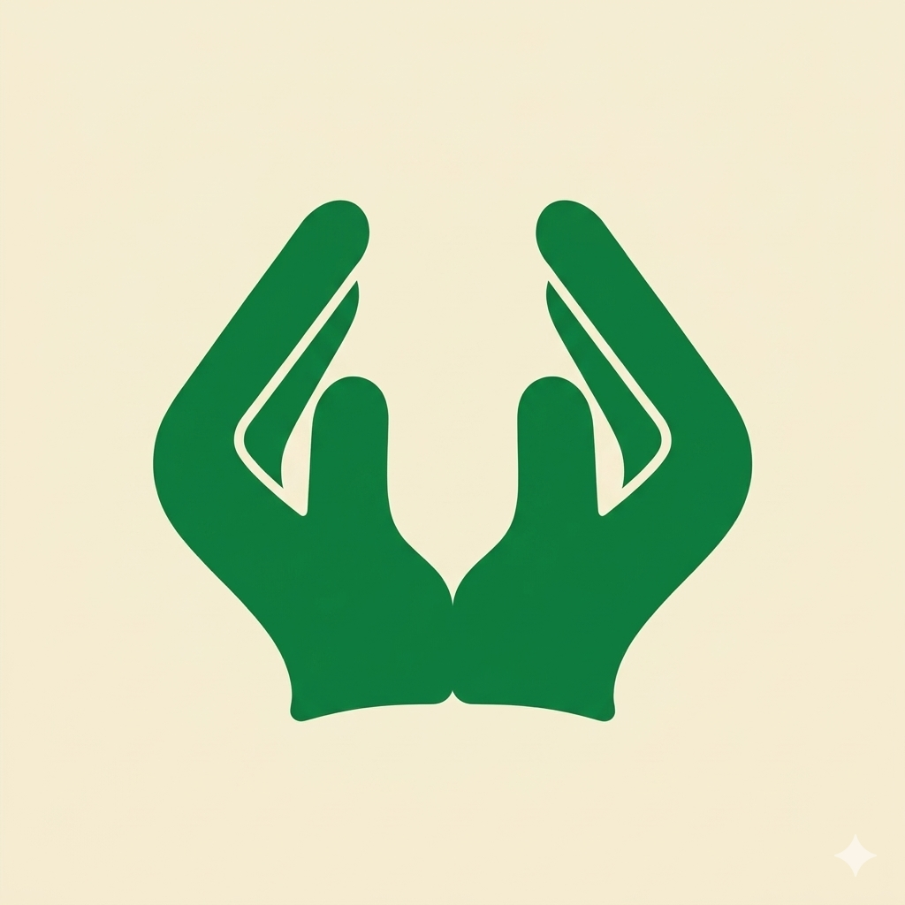
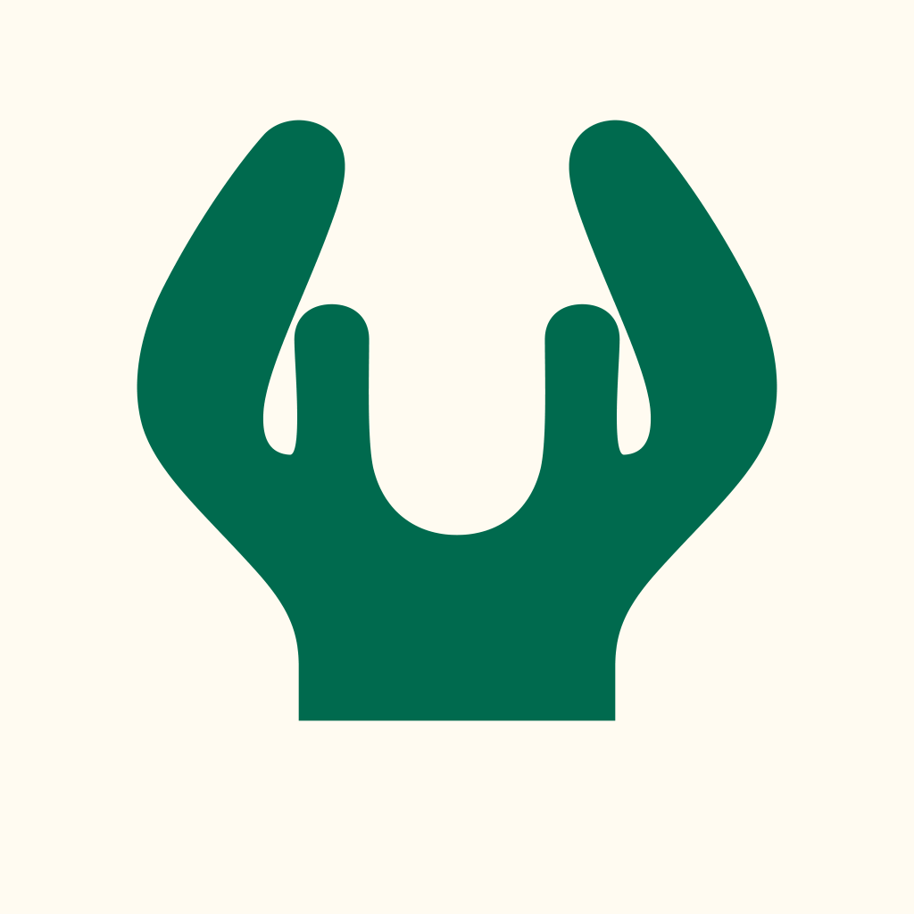

Icône, logo et splash — analyse de la référence et spécification
Critère n°1 : un nouvel utilisateur comprend immédiatement « deux mains levées pour faire une douaa ». Aucune nouvelle métaphore : la silhouette de la référence est conservée, puis corrigée pour la lisibilité et les contraintes des plateformes.
01Analyse de l'image de référence


Ce qui fait lire « douaa »
- Deux lobes symétriques distincts, séparés par le V central.
- Doigts orientés vers le haut et l'intérieur = geste de demande / réception.
- Pouces courts détachés : preuve anatomique qu'il s'agit de mains.
- Aplat unique à fort contraste, aucun élément concurrent.
Risques identifiés
- Le filet interne (≈ 1,2 % W) tombe sous 1 px dès 96 px : pouce et doigts fusionnent.
- Paumes jointes : à 32–48 px la forme peut se lire tulipe, couronne ou « W ».
- Les flancs (r ≈ 340 px du centre) dépassent le cercle de sécurité Android (r ≈ 313 px) → rognage.
- Crochets du poignet : bruit visuel, lecture « griffes ».
Constat sur l'existant (repo)
- Mains réalistes ≈ 27 % du canvas, halo doré, texte arabe dans l'icône.
adaptive_icon_foreground= l'image pleine carrée : texte et mains rognés par le masque.- Splash et icône partagent le même fichier ; iOS non généré (
ios: false).
02Principes de design retenus
- Une seule silhouette maîtresse (vectorielle), dérivée de la référence, utilisée à l'identique partout.
- Deux mains distinctes : jamais de fusion. Une fente sépare les paumes jusqu'en bas.
- Aplat monochrome vert sur ivoire. Pas de dégradé, d'ombre ni de contour sur le symbole.
- L'espace négatif est un élément dessiné, avec des largeurs minimales imposées.
- Deux niveaux de détail : « Standard » (≥ 96 px) et « Petite taille » (≤ 64 px), même contour extérieur.
- Rien d'autre dans l'icône : ni texte, ni mosquée, ni étoile, ni halo.
- La plateforme applique le masque : aucun coin arrondi dans les fichiers.
03Description précise de la silhouette
Construction de la main gauche ; la main droite est son miroir exact sur l'axe vertical. Unités relatives à W = largeur totale du symbole (deux mains).
04Palette
- Dégradé des mains : aucun. Fond : dégradé radial facultatif #FAF6EA (centre) → #F4EDD8 (bords), écart imperceptible à 48 px.
- #0F7A45 est légèrement plus profond que la référence (#137F43) pour gagner du contraste, sans atteindre le vert quasi noir qui écrase les détails.
- Cohérence avec l'app : les verts existants (#0E7A5B, #006A4E, #1E8449) restent dans la même famille.
05Proportions et espace négatif
Règle : à toute taille de rendu, la fente centrale et le V doivent mesurer ≥ 1 px physique. Si ce n'est plus vrai, basculer sur la version « Petite taille ». Tous les éléments internes ont des bouts arrondis ; aucun angle vif sauf la pointe basse du V.
06Safe zones
Le symbole est centré sur la boîte englobante, puis remonté de 1 % de la hauteur du canvas (compensation optique : la masse est en bas). À 54 % sur 108 dp, le point le plus éloigné du centre se trouve à ≈ 29 dp : dans le cercle sûr de 33 dp, marge ≈ 4 dp.
07Dimensions et fichiers
Source de vérité : le SVG. Tous les PNG en sont exportés, jamais recadrés à partir d'un autre PNG. Espace colorimétrique sRGB partout (P3 inutile pour un aplat).
08Android — architecture Adaptive Icon
Choix du cadre (question 7)
− Double arrondi / liseré sur tous les launchers et iOS. Rejeté par Play et Apple.Rejeté
− Sur Android, sans couches séparées : icône « legacy » rétrécie dans un cercle blanc.Retenu pour iOS / Play
− Demande de respecter la safe zone.Retenu pour Android
Recommandation : un seul master carré sans coins (B) pour iOS, Play et legacy Android, plus les couches adaptatives (C) pour Android 8+.
- Background : couleur unie
#F4EDD8(ressource couleur, pas une image). Remplace l'actuel #0E7A5B. - Foreground : mains seules sur transparent, W = 54 % du canvas 108 dp. Version « Petite taille » du tracé (le rendu launcher fait 48–64 dp).
- Monochrome (Android 13+) : même tracé en une couleur, même position. Sans lui, l'icône est exclue des icônes thématiques.
- Taille de travail : 1024 × 1024 = 108 dp ; grille : zone visible 72 dp (683 px), cercle sûr 66 dp (626 px).
- Launcher : vérifier cercle, squircle, carré arrondi, goutte (Pixel, Samsung One UI, Xiaomi) et les fonds d'écran clair / sombre / photo.
flutter_launcher_icons:
android: true
ios: true
remove_alpha_ios: true
image_path: "assets/icon/icon_master.png"
adaptive_icon_background: "#F4EDD8"
adaptive_icon_foreground: "assets/icon/icon_foreground.png"
adaptive_icon_monochrome: "assets/icon/icon_monochrome.png"
web:
generate: true
image_path: "assets/icon/icon_master.png"
background_color: "#F4EDD8"
theme_color: "#0F7A45"
09iOS
- Master 1024 × 1024, PNG sRGB sans canal alpha, carré plein, aucun coin arrondi (le squircle est appliqué par iOS).
- Composition : fond #F4EDD8 plein, mains W = 62 %, centrées (+1 % optique).
- iOS 18 : variante Dark (mains #2E9A5F sur fond transparent → iOS pose un fond sombre) et Tinted (silhouette en niveaux de gris). Mêmes tracé et position.
- Aucun texte, aucune ombre portée, aucun reflet. Le repo génère aujourd'hui
ios: false: à activer.
10Google Play
Les deux doivent être visuellement identiques ; seule la mise en œuvre diffère. Toute modification de l'une impose la mise à jour de l'autre.
11Spécification A — App Icon
- Contenu : les deux mains, fond Ivoire. Rien d'autre. Décor : au plus le dégradé radial du fond (§4).
- Mains : aplat #0F7A45, W selon la surface (§6).
- Version Standard (rendus ≥ 96 px, Play, iOS 1024) : filet interne 0,025 W.
- Version Petite taille (launcher, mipmaps ≤ mdpi/xhdpi, favicon) : filet interne supprimé ; à la place, une encoche en coin (0,05 W de large à l'ouverture) entaille la paume entre pouce et doigts depuis le V central, pour garder le pouce détaché. Fente centrale portée à 0,04 W. Contour extérieur inchangé.
12Spécification B — Logo
- Mains seules, fond transparent, sans bordure, décor ni texte. Tracé Standard.
- Déclinaisons : Émeraude #0F7A45 (fonds clairs) · Ivoire #F4EDD8 (fonds verts / sombres, p. ex. #0A5C34) · Noir #1F2A23 (impression 1 couleur).
- Zone de protection : 0,25 W sur les quatre côtés. Taille minimale : 24 px (version Petite taille sous 64 px).
- Interdits : recolorer en dégradé, contour, ombre, rotation, déformation, placer sur une photo chargée.
- Lockup (site, partage) : logo + « اللهم ارحم أحبّتي » en Lateef, à droite (RTL), hauteur de texte = 0,35 H, espacement 0,2 W.
13Spécification C — Splash
Contrainte : depuis Android 12, le splash système n'accepte qu'une icône centrée (288 dp, contenu dans un cercle de 192 dp) sur une couleur unie. Paysage, architecture et texte ne peuvent pas y figurer. Le splash se fait donc en deux temps.
flutter_native_splash:
color: "#F4EDD8"
image: assets/splash/splash_logo.png
color_dark: "#0A5C34"
image_dark: assets/splash/splash_logo_ivory.png
android_12:
color: "#F4EDD8"
image: assets/splash/splash_logo.png
color_dark: "#0A5C34"
image_dark: assets/splash/splash_logo_ivory.png
ios: true
14Règles de cohérence
Strictement identique
- Tracé SVG des mains (même fichier)
- Proportions internes (§5)
- Orientation, symétrie, axe vertical
- Couleur des mains #0F7A45 (ou Ivoire en inversé)
- Aplat sans contour
- Absence d'ombre sur le symbole
- Philosophie : pictogramme plat, sobre
Peut varier
- Arrière-plan (ivoire, transparent, vert profond)
- Décor (splash uniquement)
- Taille du symbole (§6)
- Texte (logo lockup et splash uniquement)
- Niveau de détail : Standard / Petite taille
15Checklist de validation
Banc de test : référence actuelle rendue aux tailles réelles, dans les masques cercle et squircle, sur le fond choisi dans les Tweaks. À refaire avec chaque version produite.
À chaque taille (1024 → 32)
- Voit-on deux mains ?
- Voit-on le geste de douaa ?
- Distingue-t-on gauche / droite ?
- Pouce et doigts restent-ils séparés ?
- Fente et V ≥ 1 px physique ?
- Confusion possible (cœur, feuille, ailes, tulipe, couronne, « W », flamme) ?
Méthode
- Export réel à 1024, 512, 256, 128, 96, 64, 48, 32 (pas un redimensionnement navigateur).
- Test du flou : flou gaussien 2 px à 64 px — la silhouette à deux lobes doit subsister.
- Test en capture d'écran d'un vrai launcher, grille de 20 icônes concurrentes (catégorie Religion).
- Test de 5 s auprès de personnes qui ne connaissent pas l'app : « Que représente cette icône ? » sans indice.
- Si échec à ≤ 48 px : passer à la version Petite taille, élargir fente centrale puis encoche. Ne jamais toucher le contour extérieur.
16Critères d'acceptation
- Reconnaissance : ≥ 8 personnes sur 10, sans indice, répondent « mains / prière / douaa » face à l'icône à 48 px dans une grille launcher.
- Aucune confusion avec cœur, feuille, ailes, flamme ou tulipe citée par plus d'une personne sur 10.
- Deux mains distinguables jusqu'à 32 px (fente centrale visible).
- Safe zone : aucun pixel du symbole hors du cercle de 66 dp dans le foreground ; aucun rognage sur cercle, squircle et goutte.
- Contraste mains / fond ≥ 4,5 : 1 (#0F7A45 sur #F4EDD8 : ≈ 4,8 : 1).
- Fichiers conformes : iOS sans alpha ni coins ; Play 512 opaque ≤ 1 Mo ; foreground et monochrome transparents ; aucun texte dans l'icône.
- Cohérence : icône, logo et splash exportés depuis le même SVG ; différence de tracé nulle (superposition à 100 %).
- Artefacts : filigrane, crochets du poignet et asymétries supprimés.